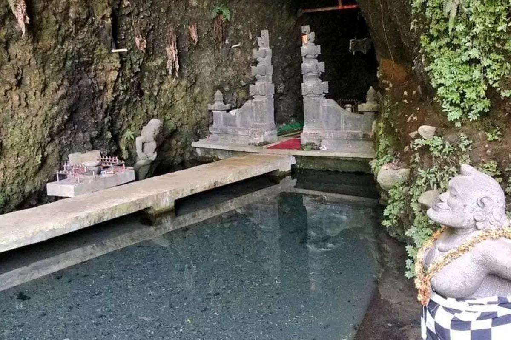

Mata air sakral di lereng Gunung Sindoro, sumber air suci bagi prosesi Trisuci Waisak.
Umbul Jumprit merupakan mata air alami yang terletak di kawasan hutan lindung Dusun Jumprit, Desa Tegalrejo. Sejak lama, mata air peninggalan era Majapahit di bawah gua ini dipercaya memiliki kejernihan dan debit air abadi yang tidak pernah surut meski musim kemarau panjang.
Umbul Jumprit dikenal luas karena setiap tahun menjadi lokasi pengambilan air suci dalam rangkaian prosesi Trisuci Waisak umat Buddha, yang kemudian disemayamkan di Candi Mendut bersama api abadi sebelum diarak ke Candi Borobudur. Tradisi ini telah berlangsung puluhan tahun dan menjadikan Umbul Jumprit sebagai situs penting yang menyatukan nilai spiritual dan pelestarian alam.
Selain nilai spiritualnya, Umbul Jumprit juga menjadi hulu Sungai Progo dan kawasan konservasi mata air vital bagi warga sekitar, dikelilingi pohon-pohon hutan tua dan kawanan kera liar yang menambah suasana teduh sekaligus sakral.

Dusun Jumprit, Desa Tegalrejo, Kecamatan Ngadirejo, Kabupaten Temanggung, Jawa Tengah.
Hubungi pengelola untuk pertanyaan jadwal kunjungan, reservasi rombongan, atau info lain seputar Umbul Jumprit.